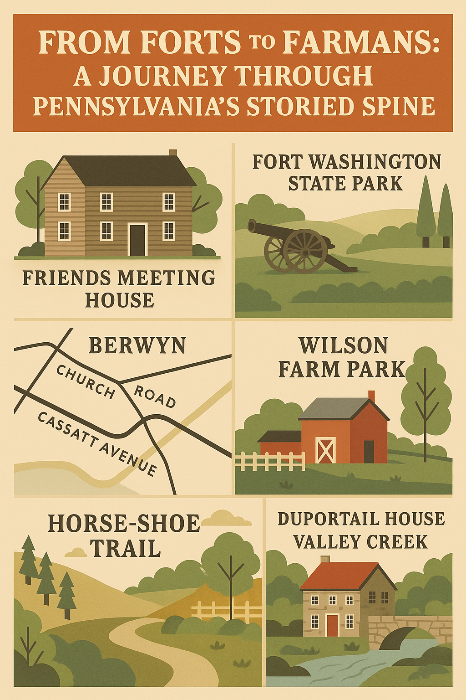

From Forts to Farm Markets: A Journey Through Pennsylvania’s Storied Spine
By Charlotte Everley
Stretching from the colonial echoes of Fort Washington to the tree-canopied grace of Devon, Pennsylvania’s eastern corridor is more than a commuter belt—it’s a living archive. What appears at first to be a string of neighborhoods is, in truth, a historically-charged cultural vein that pulses with memory, movement, and meaning.
Begin in Plymouth Meeting, where the scent of earth still lingers around the edges of modern commerce. Whole Foods hums, OrangeTheory glows, but the roads remember. Germantown Pike, once a Lenape trail, now threads together backdrops for stories both whispered and shouted—underground railroad routes, Quaker roots, abolitionist zeal.
Drift southeast toward Flourtown and Lafayette Hill, and the land buckles with memory. Here, stone-walled estates nod to their Revolutionary service, while Fort Washington State Park holds the residue of military foresight and weathered wooden signs that mark where history paced. Trails twist toward Friends Meeting Houses, modest and resolute, where silence once shaped civic resistance.
The road west, toward Berwyn and the Main Line, is one of elevation—not only topographically but also spiritually. Each bend in Church Road, each rise past Cassatt Avenue, reflects the region’s dual nature: contemplative and industrious. From Berwyn Baptist to ACM Zion, this is a geography that holds faiths in plurality—often just blocks apart.
And in between, farmers’ markets bloom like annotations. At Lancaster Farm Market or Trader Joe’s, the legacy of working land is preserved through weekly rituals of sampling, gathering, exchanging. Wilson Farm Park to the north becomes a meadowed commons, echoing 18th-century patterns of community care.
One can follow the Horse-Shoe Trail, veering off from manicured fields into pine-shadowed hills. Valley Forge National Park, of course, remains the crown jewel—a sanctified acreage of endurance and encampment. But veer down Yellow Springs Road, and you’ll find lesser-known sanctuaries: Duportail House, Diamond Rock Chapel, Valley Creek, still whispering beneath laurel and limestone.
This corridor doesn’t merely house Pennsylvania’s heritage—it animates it. J&J offices, Susquehanna HQs, and biotech nodes rise among the trees, but they do not erase the fieldstone walls or the worn trailheads. Instead, they exist in an uneasy alliance: progress threaded through preservation.
To live here is to inhabit a story with chapters written in timber and shale, glass and steel. It’s a place that tolerates contradiction—and, in that tolerance, fosters its greatest virtue: continuity.